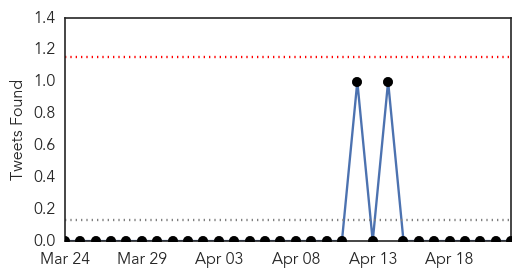
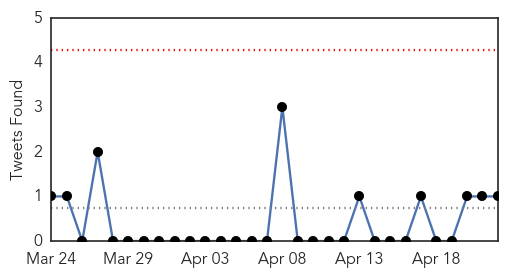
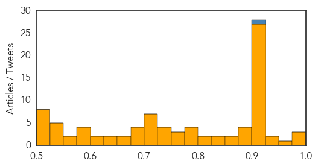

Influenza
30-Day Web Trend
1 alerts, 0 warnings

30-Day Twitter Trend
1 alerts, 0 warnings

Article Locations

Article Confidences

Top Articles:
- 0.992
- U.S. Poultry Seen Facing Largest Bird Flu Outbreak Since ’83
- 0.986
- Bird flu spreads in US, but risk to people 'low'
- 0.962
- The HPAI Poultry Vaccine Dilemma
- 0.961
- dog park
- 0.960
- Running with the herd
- 0.946
- Warmer weather should arrest bird flu for now, U.S. officials say
- 0.946
- U.S. chickens face worst bird flu in decades; humans seen as safe
- 0.943
- Flu vaccine is available
- 0.939
- Iowa Farm To Kill 5 Million Chickens In Effort To Contain Avian Flu
- 0.898
- Dog Flu: Your Questions Answered
- 0.872
- Dog flu 'just a matter of time' in Minnesota
- 0.844
- Over 150 ill as flu grips Kalikot village
- 0.834
- CDC researching human bird flu vaccine just in case
- 0.808
- For flu shot compliance, stick beats carrot
- 0.793
- Bird Flu Takes Big Toll Yet as Virus Hits U.S. Chicken Farms — Naharnet
- 0.768
- Iowa hunters asked to watch for bird flu in wild turkeys
- 0.751
- April 21, 2015 Archives
- 0.751
- April 21, 2015 Archives
- 0.751
- April 21, 2015 Archives
- 0.751
- April 21, 2015 Archives
- 0.751
- April 21, 2015 Archives
- 0.743
- WHO: Unvaccinated Children Dying From Preventable Diseases
- 0.703
- Unvaccinated Children Dying From Preventable Diseases
- 0.682
- Gov't working on Avian Influenza vaccine
- 0.679
- Mexico bans poultry, egg imports from bird flu-hit Iowa
- 0.655
- Officials hope largest U.S. outbreak is Iowa's last
- 0.602
- Avian Flu Outbreak Push Iowa Farm to Kill 5 Million Chickens
- 0.573
- 7 News Belize
- 0.538
- Mexico bans poultry, egg imports from bird flu-hit Iowa
- 0.527
- DNR offers guidance for cleaning wild turkeys
- 0.508
- Nebraska chicken farmers hope bird flu risk on the decline
- 0.501
- Avian flu crisis grows for poultry producers throughout USA
Top Tweets:
- 0.852
- CDC - Influenza (Flu) http://t.co/Mp7k8adsV7
Unknown
30-Day Web Trend
0 alerts, 0 warnings

30-Day Twitter Trend
0 alerts, 0 warnings

Article Locations

Article Confidences
Top Articles:
- 0.998
- Iowa is slaughtering 3 million hens to avert a massive bird flu outbreak
- 0.992
- Federal scientists working on bird flu vaccines
- 0.991
- Will County Animal Control Urges Protection against Dog Flu
- 0.967
- Your Early Morning - Did you know dogs can get the flu?
- 0.945
- Children's paralysis still stumping health officials
- 0.939
- Foodborne Disease Scan for Apr 22, 2015
- 0.917
- Chicago Tribune
- 0.917
- Chicago Tribune
- 0.917
- Chicago Tribune
- 0.917
- Chicago Tribune
- 0.917
- Chicago Tribune
- 0.917
- Chicago Tribune
- 0.917
- Chicago Tribune
- 0.917
- Chicago Tribune
- 0.917
- Chicago Tribune
- 0.917
- Chicago Tribune
- 0.917
- Chicago Tribune
- 0.917
- Chicago Tribune
- 0.917
- Chicago Tribune
- 0.917
- Chicago Tribune
- 0.917
- Chicago Tribune
- 0.917
- Chicago Tribune
- 0.917
- Chicago Tribune
- 0.917
- Chicago Tribune
- 0.917
- Chicago Tribune
- 0.917
- Chicago Tribune
- 0.917
- Chicago Tribune
- 0.917
- Chicago Tribune
- 0.917
- Chicago Tribune
- 0.917
- Chicago Tribune
- 0.916
- One dead, 23 sick with Botulism symptoms after church potluck
- 0.911
- Baer chicken farm near Lake Park hit with deadly avian flu
- 0.910
- The world windows to Thailand
- 0.898
- Immunizations lead to decrease in diseases
- 0.891
- French clinicians diagnose first case of rabies since 2003
- 0.891
- Ba Ria – Vung Tau fights malaria
- 0.878
- Local veterinarian suggests dog flu vaccine
- 0.869
- Nearly 100 people at Cooden Beach Hotel fall ill amid norovirus outbreak
- 0.862
- One dead, 23 sick with botulism symptoms after church potluck
- 0.837
- U.S. could use vaccines being developed to fight bird flu in poultry
- 0.827
- Experts Weigh In On Avian Flu Spread
- 0.818
- Bird flu now confirmed in Iowa, feds destroy 5.3 million hens, states on alert
- 0.802
- Study finds increasing size of elderly population as major contributor to TB infection in China
- 0.799
- Worried sick over canine flu? Tips to help protect your pup
- 0.795
- France Records First Case Of Rabies In Over A Decade
- 0.793
- Botulism After OH Church Potluck Kills 1, Sickens 20
- 0.789
- Worried sick over canine flu? Tips to help protect your pup - MyNorthwest
- 0.764
- E.coli outbreak linked to Chipotle spreads to 3 more states -
- 0.764
- E.coli outbreak linked to Chipotle spreads to 3 more states -
- 0.758
- Botulism Outbreak at Church Potluck Leaves 1 Dead, 20 Others in Hospital
Showing top 50 articles...
Top Tweets:
- 0.921
- CDCEIS15 Disease detectives identified 10 add’l Heartland Virus disease cases; most reported recent tick exposures or outdoor activities.
- 0.603
- Se trata de amor y de control.
- 0.508
- H5N2 is an avian flu virus. It’s never been known to infect humans to date; human health risk is low http://t.co/Hg1k3GOfaW